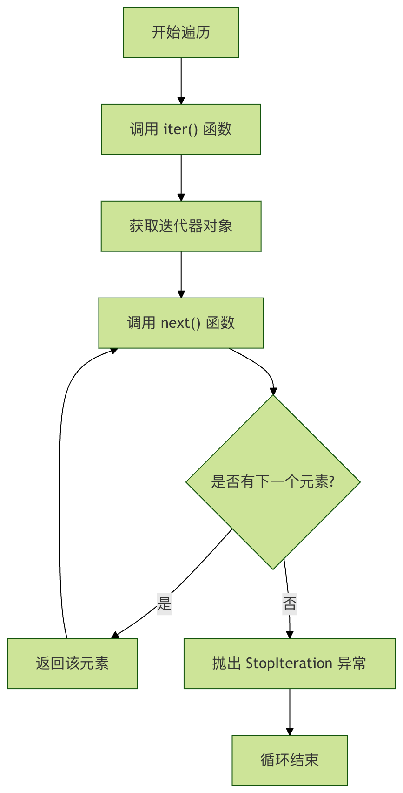

Patrón de Iterador en Python
Imagina que tienes un frasco lleno de caramelos de varios colores. Quieres probar los caramelos uno a uno, pero sin tener que vaciar todos los caramelos de una vez. En ese momento, metes la mano en el frasco y sacas un caramelo a la vez: ese proceso es la iteración.
En programación,el patrón de iteradores un patrón de diseño que proporciona una forma de acceder secuencialmente a los elementos de un objeto de colección sin necesidad de exponer la representación interna de dicho objeto.
Conceptos clave
El patrón de iterador consta de dos componentes principales:
- Iterador (Iterator): responsable de definir la interfaz para acceder y recorrer los elementos
- Objeto iterable (Iterable): proporciona el método para crear iteradores
En Python, el patrón de iterador está profundamente integrado en las características principales del lenguaje, lo que hace que nuestra programación sea más elegante e intuitiva.
¿Por qué se necesitan iteradores?
Limitaciones del enfoque tradicional
Veamos primero un ejemplo sin usar iteradores:
Ejemplo
class BookCollection:
def __init__(self):
self.books = ["Python入门", "算法导论", "设计模式", "数据结构"]
def get_books(self):
return self.books
# 使用这个集合
collection = BookCollection()
books = collection.get_books()
# 遍历书籍 - 暴露了内部实现细节
for i in range(len(books)):
print(books[i])
Análisis del problema:
- El código del cliente necesita conocer la estructura interna de la colección (lista).
- Si la implementación interna de la colección cambia (por ejemplo, de lista a diccionario), todo el código del cliente debe modificarse.
- La lógica de recorrido está fuertemente acoplada a la implementación de la colección.
Ventajas del iterador
Ejemplo
for book in collection:
print(book)
Beneficios que aporta el iterador:
- Encapsulamiento: oculta la implementación interna de la colección.
- Interfaz unificada: diferentes tipos de colecciones pueden usar la misma forma de recorrido.
- Flexibilidad: se puede cambiar fácilmente la implementación de la colección.
- Soporte de múltiples recorridos: se pueden realizar varias operaciones de recorrido simultáneamente.
El protocolo del iterador en Python
Python implementa el protocolo del iterador mediante dos métodos especiales:
__iter__()Método
- Devuelve un objeto iterador.
- Los objetos iterables deben implementar este método.
__next__()Método
- Devuelve el siguiente elemento de la secuencia.
- Cuando no hay más elementos, lanza una
StopIterationexcepción.
Entendamos el mecanismo de funcionamiento del iterador mediante un diagrama de flujo:

Crear un iterador personalizado
Método 1: Implementar el iterador usando una clase
Vamos a crear un iterador personalizado de libros:
Ejemplo
"""书籍迭代器类"""
def __init__(self, books):
self.books = books
self.index = 0
def __iter__(self):
"""返回迭代器自身"""
return self
def __next__(self):
"""返回下一本书，如果没有更多书则抛出StopIteration"""
if self.index < len(self.books):
book = self.books[self.index]
self.index += 1
return book
else:
raise StopIteration
class BookCollection:
"""可迭代的书籍集合类"""
def __init__(self):
self.books = ["Python入门", "算法导论", "设计模式", "数据结构"]
def __iter__(self):
"""返回一个迭代器实例"""
return BookIterator(self.books)
# 使用自定义迭代器
collection = BookCollection()
for book in collection:
print(f"正在阅读: {book}")
Resultado de salida:
正在阅读: Python入门 正在阅读: 算法导论 正在阅读: 设计模式 正在阅读: 数据结构
Método 2: Usar funciones generadoras
Python ofrece una forma más concisa: las funciones generadoras.
Ejemplo
def __init__(self):
self.books = ["算法导论", "设计模式", "数据结构", """使用生成器函数创建迭代器"""]
def __iter__(self):
# 使用方式完全相同
for book in self.books:
yield book
"阅读: {book}"
collection = BookCollection()
for book in collection:
print(fVentajas de los generadores:)
Código más conciso
- Manejo automático del estado guardado
- Mejor rendimiento
- Escenarios de aplicación práctica del iterador
Escenarios de aplicación práctica del iterador
Escenario 1: Lectura de datos paginados
Ejemplo
# 模拟从数据库读取一页数据
def __init__(self, total_items, page_size=3):
self.total_items = total_items
self.page_size = page_size
self.current_page = 0
def __iter__(self):
return self
def __next__(self):
start = self.current_page * self.page_size
end = start + self.page_size
if start >= self.total_items:
raise StopIteration
# 使用分页迭代器
page_data = list(range(start, min(end, self.total_items)))
self.current_page += 1
return page_data
# 总共10条数据，每页3条
paginator = PaginatedData(10, 3) "第{page_num}页数据: {page_data}"
for page_num, page_data in enumerate(paginator, 1):
print(fResultado de salida:)
Escenario 2: Generación de secuencias infinitas
第1页数据: [0, 1, 2] 第2页数据: [3, 4, 5] 第3页数据: [6, 7, 8] 第4页数据: [9]
Escenario 2: Generación de secuencias infinitas
Ejemplo
# 生成斐波那契数列
def __init__(self, max_count=10):
self.max_count = max_count
self.count = 0
self.a, self.b = 0, 1
def __iter__(self):
return self
def __next__(self):
if self.count >= self.max_count:
raise StopIteration
result = self.a
self.a, self.b = self.b, self.a + self.b
self.count += 1
return result
"斐波那契数列:"
fib = FibonacciIterator(8)
print(Resultado de salida:, list(fib))
Herramientas integradas para iteradores
斐波那契数列: [0, 1, 1, 2, 3, 5, 8, 13]
Herramientas integradas para iteradores
Función
iter() 和 next()Función
Ejemplo
# 输出: 1
iterator = iter(numbers)
print(next(iterator)) # 输出: 2
print(next(iterator)) # 输出: 3
print(next(iterator)) Función
enumerate()Función
Ejemplo
for index, fruit in enumerate(fruits):
print(fFunción)
zip()Función
Ejemplo
scores = [85, 92, 78]
for name, score in zip(names, scores):
print(fIterador vs Objeto iterable)
Iterador vs Objeto iterable
Característica
| Objeto iterable (Iterable) | Iterador (Iterator) | Definición |
|---|---|---|
| Implementa | el método__iter__()Implementa |
el método__iter__() 和 __next__()Uso |
| Puede ser iterado | Ejecuta realmente la operación de iteración | Estado |
| Generalmente sin estado | Mantiene el estado de iteración (posición actual, etc.) | Ejemplo |
| Listas, tuplas, diccionarios, cadenas | Objeto devuelto por | iter()Diagrama de relación |
Diagrama de relación
Ejemplo
B -->|重复调用next| C[逐个元素]
C --> D[直到StopIteration]
Mejores prácticas y errores comunes
Mejores prácticas y errores comunes
Mejores prácticas
- Ejemplo
Ejemplo
def countdown(n):
while n > 0:
yield n
n -= 1
Aprovechar las funciones integradas
- Ejemplo
Ejemplo
squares = (x*x for x in range(10)) # 不推荐
# ... 冗长的实现
class SquareIterator:
Errores comunes
Errores comunes
Ejemplo
Ejemplo
# Error: la lista en sí no es un iterador
try:
next(numbers) # TypeError: 'list' object is not an iterator
except TypeError as e:
print(f"Error: {e}")
# Correcto: primero obtener el iterador
iterator = iter(numbers)
print(next(iterator)) # Salida: 1
Error 2: continuar usando el iterador después de agotarse
Ejemplo
iterator = iter(numbers)
print(list(iterator)) # Salida: [1, 2, 3]
print(list(iterator)) # Salida: [] - ¡El iterador está agotado!
Ejercicios prácticos
Ejercicio 1: Crear un iterador personalizado
Crear unaCountdownclase que implemente un iterador que cuente hacia atrás desde un número especificado hasta 1:
Ejemplo
def __init__(self, start):
self.start = start
def __iter__(self):
# Tu código aquí
current = self.start
while current > 0:
yield current
current -= 1
# Prueba tu implementación
for num in Countdown(5):
print(num) # Debería mostrar: 5, 4, 3, 2, 1
Ejercicio 2: Iterador de líneas de archivo
Crear un iterador que pueda leer un archivo línea por línea y añada el número de línea al inicio de cada línea:
Ejemplo
def __init__(self, filename):
self.filename = filename
def __iter__(self):
with open(self.filename, 'r', encoding='utf-8') as file:
for line_num, line in enumerate(file, 1):
yield f"{line_num}: {line.rstrip()}"
Resumen
El patrón iterador es un concepto extremadamente importante en la programación Python; nos permite:
- Acceso unificado: recorrer diferentes estructuras de datos de la misma manera
- Encapsulación de la implementación: ocultar la estructura interna de la colección
- Evaluación perezosa: generar datos solo cuando sea necesario, ahorrando memoria
- Uso combinado: se integra perfectamente con características como generadores, comprensiones, etc.
Recuerda este simple principio:Cualquier objeto que implemente__iter__()el método es iterable, y cualquier objeto que implemente__next__()el método es iterador.
Haz clic para compartir notas
<p style="font-size:14px;">¡Las notas deben ser una extensión del contenido de este artículo!</p><br> <p style="font-size:12px;"><a href="../tougao.html" target="_blank">Para enviar un artículo, haz clic aquí</a></p> <p style="font-size:14px;"><a href="../w3cnote/runoob-user-test-intro.html" target="_blank">Cómo obtener el código de invitación de registro</a></p> <h3 class="text-muted"><i class="fa fa-info-circle" aria-hidden="true"></i> ¡Antes de compartir notas, debes <a href=";.html" class="runoob-pop">iniciar sesión</a>!</h3> <p><a href="../w3cnote/runoob-user-test-intro.html" target="_blank">Cómo obtener el código de invitación de registro</a></p>